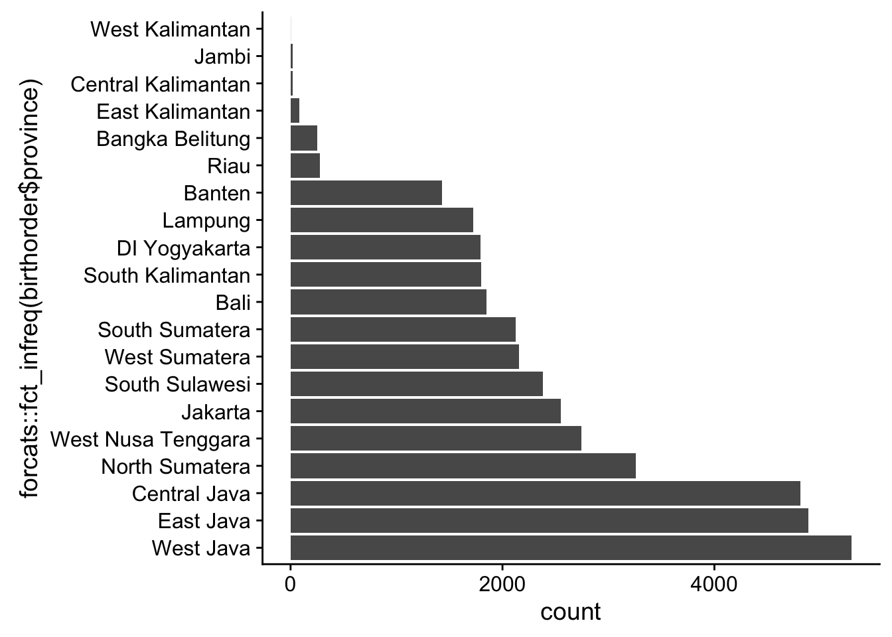
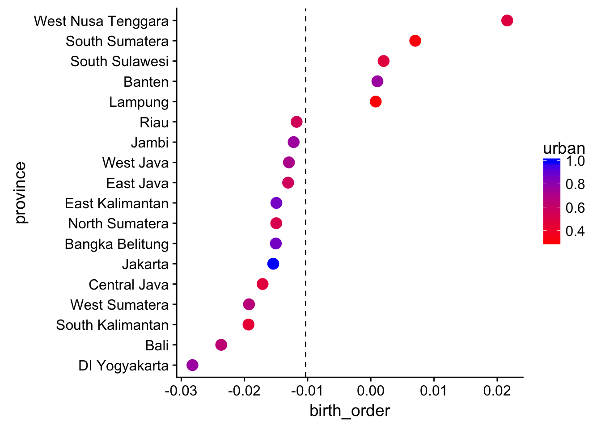
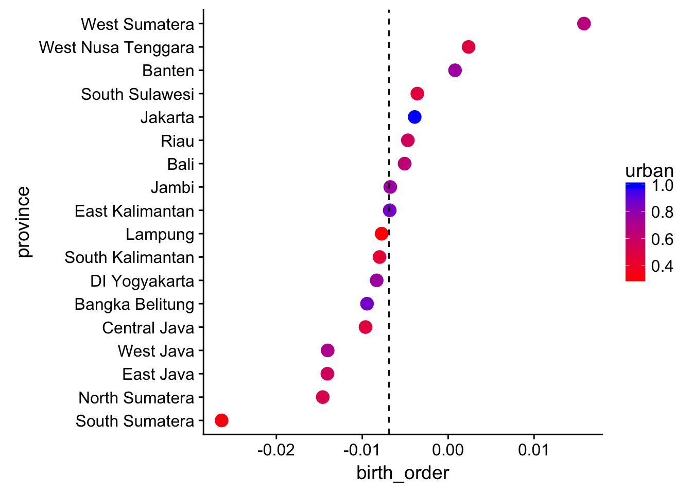
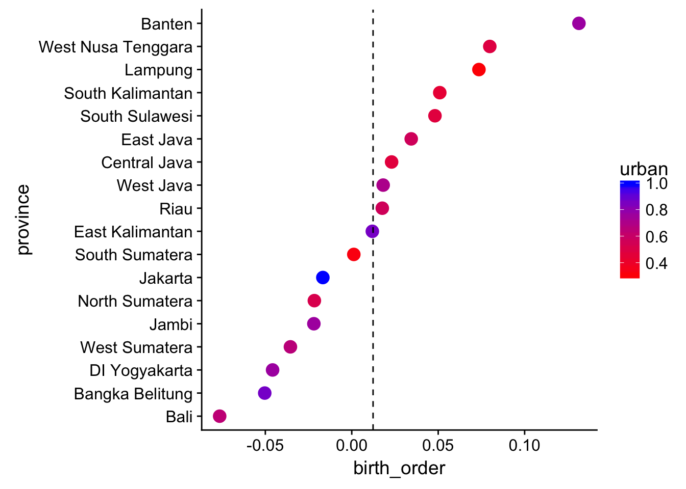
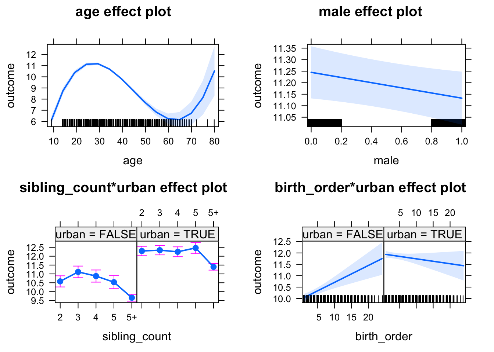
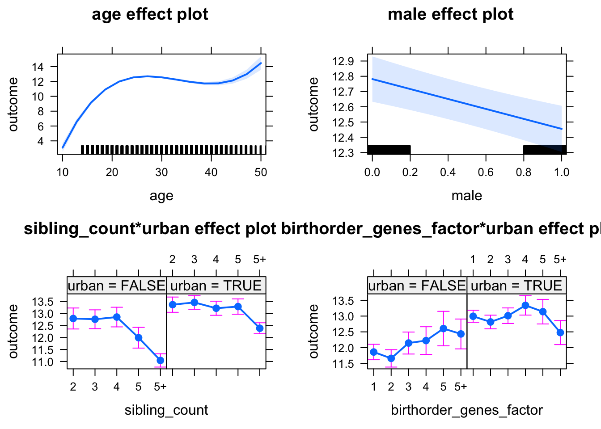

Birth Order Effects
Preparation
Helper
source("0_helpers.R")##
## Attaching package: 'formr'## The following object is masked from 'package:rmarkdown':
##
## word_document##
## Attaching package: 'lubridate'## The following object is masked from 'package:base':
##
## date## Loading required package: carData## lattice theme set by effectsTheme()
## See ?effectsTheme for details.##
## Attaching package: 'data.table'## The following objects are masked from 'package:lubridate':
##
## hour, isoweek, mday, minute, month, quarter, second, wday, week, yday, year## The following objects are masked from 'package:formr':
##
## first, last## Loading required package: Matrix##
## Attaching package: 'lmerTest'## The following object is masked from 'package:lme4':
##
## lmer## The following object is masked from 'package:stats':
##
## step##
## Attaching package: 'cowplot'## The following object is masked from 'package:ggplot2':
##
## ggsave##
## Attaching package: 'psych'## The following objects are masked from 'package:ggplot2':
##
## %+%, alpha## This is lavaan 0.5-23.1097## lavaan is BETA software! Please report any bugs.##
## Attaching package: 'lavaan'## The following object is masked from 'package:psych':
##
## cor2cov## Loading required package: lattice## Loading required package: survival## Loading required package: Formula##
## Attaching package: 'Hmisc'## The following object is masked from 'package:psych':
##
## describe## The following objects are masked from 'package:base':
##
## format.pval, units##
## Attaching package: 'tidyr'## The following object is masked from 'package:Matrix':
##
## expand##
## Attaching package: 'dplyr'## The following objects are masked from 'package:Hmisc':
##
## src, summarize## The following objects are masked from 'package:data.table':
##
## between, first, last## The following objects are masked from 'package:lubridate':
##
## intersect, setdiff, union## The following objects are masked from 'package:formr':
##
## first, last## The following objects are masked from 'package:stats':
##
## filter, lag## The following objects are masked from 'package:base':
##
## intersect, setdiff, setequal, union##
## Attaching package: 'sjPlot'## The following objects are masked from 'package:cowplot':
##
## plot_grid, save_plotopts_chunk$set(warning = FALSE)Load data
birthorder = readRDS("data/alldata_birthorder.rds")Data preparations
# For analyses we want to clean the dataset and get rid of all uninteresting data
birthorder = birthorder %>%
filter(!is.na(pidlink)) %>% # no individuals who are only known from the pregnancy file
filter(is.na(lifebirths) | lifebirths == 2) %>% # remove 7 and 2 individuals who are known as stillbirth or miscarriage but still have PID
select(-lifebirths) %>%
filter(!is.na(mother_pidlink)) %>%
select(-father_pidlink) %>%
filter(is.na(any_multiple_birth) | any_multiple_birth != 1) %>% # remove families with twins/triplets/..
filter(!is.na(birthorder_naive)) %>%
select(-starts_with("age_"), -wave, -any_multiple_birth, -multiple_birth) %>%
mutate(money_spent_smoking_log = if_else(is.na(money_spent_smoking_log) & ever_smoked == 0, 0, money_spent_smoking_log),
amount = if_else(is.na(amount) & ever_smoked == 0, 0, amount),
amount_still_smokers = if_else(is.na(amount_still_smokers) & still_smoking == 0, 0, amount_still_smokers),
birthyear = lubridate::year(birthdate))
# recode Factor Variable as Dummy Variable
birthorder = left_join(birthorder,
birthorder %>%
filter(!is.na(Category)) %>%
mutate(var = 1) %>%
select(pidlink, Category, var) %>%
spread(Category, var, fill = 0, sep = "_"), by = "pidlink") %>%
select(-Category)
# recode Factor Variable as Dummy Variable
birthorder = left_join(birthorder,
birthorder %>%
filter(!is.na(Sector)) %>%
mutate(var = 1) %>%
select(pidlink, Sector, var) %>%
spread(Sector, var, fill = 0, sep = "_"), by = "pidlink") %>%
select(-Sector)
### Variables
birthorder = birthorder %>%
mutate(
# center variables that are used for analysis
g_factor_2015_old = scale(g_factor_2015_old),
g_factor_2015_young = scale(g_factor_2015_young),
g_factor_2007_old = scale(g_factor_2007_old),
g_factor_2007_young = scale(g_factor_2007_young),
raven_2015_old = scale(raven_2015_old),
math_2015_old = scale(math_2015_old),
count_backwards = scale(count_backwards),
raven_2015_young = scale(raven_2015_young),
math_2015_young = scale(math_2015_young),
words_remembered_avg = scale(words_remembered_avg),
words_immediate = scale(words_immediate),
words_delayed = scale(words_delayed),
adaptive_numbering = scale(adaptive_numbering),
raven_2007_old = scale(raven_2007_old),
math_2007_old = scale(math_2007_old),
raven_2007_young = scale(raven_2007_young),
math_2007_young = scale(math_2007_young),
riskA = scale(riskA),
riskB = scale(riskB),
years_of_education_z = scale(years_of_education),
Total_score_highest_z = scale(Total_score_highest),
wage_last_month_z = scale(wage_last_month_log),
wage_last_year_z = scale(wage_last_year_log),
big5_ext = scale(big5_ext),
big5_con = scale(big5_con),
big5_agree = scale(big5_agree),
big5_open = scale(big5_open),
big5_neu = scale(big5_neu),
attended_school = as.integer(attended_school),
attended_school = ifelse(attended_school == 1, 0,
ifelse(attended_school == 2, 1, NA)))
qplot(birthorder$male)## `stat_bin()` using `bins = 30`. Pick better value with `binwidth`.
qplot(birthorder$g_factor_2015_old)## `stat_bin()` using `bins = 30`. Pick better value with `binwidth`.
qplot(birthorder$g_factor_2015_old)## `stat_bin()` using `bins = 30`. Pick better value with `binwidth`.
### Birthorder and Sibling Count
birthorder = birthorder %>%
mutate(
# birthorder as factors with levels of 1, 2, 3, 4, 5, 5+
birthorder_naive_factor = as.character(birthorder_naive),
birthorder_naive_factor = ifelse(birthorder_naive > 5, "5+",
birthorder_naive_factor),
birthorder_naive_factor = factor(birthorder_naive_factor,
levels = c("1","2","3","4","5","5+")),
sibling_count_naive_factor = as.character(sibling_count_naive),
sibling_count_naive_factor = ifelse(sibling_count_naive > 5, "5+",
sibling_count_naive_factor),
sibling_count_naive_factor = factor(sibling_count_naive_factor,
levels = c("2","3","4","5","5+")),
birthorder_uterus_alive_factor = as.character(birthorder_uterus_alive),
birthorder_uterus_alive_factor = ifelse(birthorder_uterus_alive > 5, "5+",
birthorder_uterus_alive_factor),
birthorder_uterus_alive_factor = factor(birthorder_uterus_alive_factor,
levels = c("1","2","3","4","5","5+")),
sibling_count_uterus_alive_factor = as.character(sibling_count_uterus_alive),
sibling_count_uterus_alive_factor = ifelse(sibling_count_uterus_alive > 5, "5+",
sibling_count_uterus_alive_factor),
sibling_count_uterus_alive_factor = factor(sibling_count_uterus_alive_factor,
levels = c("2","3","4","5","5+")),
birthorder_uterus_preg_factor = as.character(birthorder_uterus_preg),
birthorder_uterus_preg_factor = ifelse(birthorder_uterus_preg > 5, "5+",
birthorder_uterus_preg_factor),
birthorder_uterus_preg_factor = factor(birthorder_uterus_preg_factor,
levels = c("1","2","3","4","5","5+")),
sibling_count_uterus_preg_factor = as.character(sibling_count_uterus_preg),
sibling_count_uterus_preg_factor = ifelse(sibling_count_uterus_preg > 5, "5+",
sibling_count_uterus_preg_factor),
sibling_count_uterus_preg_factor = factor(sibling_count_uterus_preg_factor,
levels = c("2","3","4","5","5+")),
birthorder_genes_factor = as.character(birthorder_genes),
birthorder_genes_factor = ifelse(birthorder_genes >5 , "5+", birthorder_genes_factor),
birthorder_genes_factor = factor(birthorder_genes_factor,
levels = c("1","2","3","4","5","5+")),
sibling_count_genes_factor = as.character(sibling_count_genes),
sibling_count_genes_factor = ifelse(sibling_count_genes >5 , "5+",
sibling_count_genes_factor),
sibling_count_genes_factor = factor(sibling_count_genes_factor,
levels = c("2","3","4","5","5+")),
# interaction birthorder * siblingcout for each birthorder
count_birthorder_naive =
factor(str_replace(as.character(interaction(birthorder_naive_factor, sibling_count_naive_factor)),
"\\.", "/"),
levels = c("1/2","2/2", "1/3", "2/3",
"3/3", "1/4", "2/4", "3/4", "4/4",
"1/5", "2/5", "3/5", "4/5", "5/5",
"1/5+", "2/5+", "3/5+", "4/5+",
"5/5+", "5+/5+")),
count_birthorder_uterus_alive =
factor(str_replace(as.character(interaction(birthorder_uterus_alive_factor, sibling_count_uterus_alive_factor)),
"\\.", "/"),
levels = c("1/2","2/2", "1/3", "2/3",
"3/3", "1/4", "2/4", "3/4", "4/4",
"1/5", "2/5", "3/5", "4/5", "5/5",
"1/5+", "2/5+", "3/5+", "4/5+",
"5/5+", "5+/5+")),
count_birthorder_uterus_preg =
factor(str_replace(as.character(interaction(birthorder_uterus_preg_factor, sibling_count_uterus_preg_factor)),
"\\.", "/"),
levels = c("1/2","2/2", "1/3", "2/3",
"3/3", "1/4", "2/4", "3/4", "4/4",
"1/5", "2/5", "3/5", "4/5", "5/5",
"1/5+", "2/5+", "3/5+", "4/5+",
"5/5+", "5+/5+")),
count_birthorder_genes =
factor(str_replace(as.character(interaction(birthorder_genes_factor, sibling_count_genes_factor)), "\\.", "/"),
levels = c("1/2","2/2", "1/3", "2/3",
"3/3", "1/4", "2/4", "3/4", "4/4",
"1/5", "2/5", "3/5", "4/5", "5/5",
"1/5+", "2/5+", "3/5+", "4/5+",
"5/5+", "5+/5+")))
birthorder <- birthorder %>%
mutate(sibling_count = sibling_count_naive_factor,
birth_order_nonlinear = birthorder_naive_factor,
birth_order = birthorder_naive,
count_birth_order = count_birthorder_naive)By province
birthorder <- birthorder %>% filter(!is.na(province))
birthorder$urban = factor(birthorder$sc05==1)
provinces <- birthorder %>% select(province, urban) %>% group_by(province) %>%
summarise(urban = mean(urban == TRUE)) %>% arrange(desc(urban))
kable(provinces)##
##
## province urban
## ------------------- -------
## Jakarta 1.0000
## Bangka Belitung 0.8661
## East Kalimantan 0.8625
## Banten 0.7689
## DI Yogyakarta 0.7666
## Jambi 0.7619
## West Java 0.7073
## West Sumatera 0.6572
## Central Kalimantan 0.6522
## Bali 0.6434
## East Java 0.5625
## Riau 0.5580
## North Sumatera 0.5179
## West Nusa Tenggara 0.4823
## South Sulawesi 0.4727
## Central Java 0.4660
## South Kalimantan 0.4394
## South Sumatera 0.3151
## Lampung 0.2990
## West Kalimantan 0.0000add_slope_by_province <- function(model) {
m1 <- update(model, formula = . ~ . + (1 + sibling_count | province), REML = FALSE)
m2 <- update(model, formula = . ~ . + (1 + sibling_count + birth_order | province), REML = FALSE)
an <- anova(m1, m2)
if (an$`Pr(>Chisq)`[2] < .05) {
print(ranef(m2)$province %>% as.data.frame() %>%
tibble::rownames_to_column("province") %>%
left_join(provinces, by = "province") %>%
arrange(birth_order) %>%
mutate(birth_order = birth_order + fixef(m2)["birth_order"],
province = forcats::fct_inorder(province)
) %>%
ggplot(aes(province, birth_order, colour = urban)) +
geom_point(size = 4) +
scale_colour_continuous(low = "red", high = "blue") +
coord_flip() +
geom_hline(yintercept = fixef(m2)["birth_order"], linetype = 'dashed'))
cat("\n\n\n")
}
an
}Wherever adding a random slope for the linear birth order by province improved the model at a nominal significance of p < .05, we show how effects varied by province in a plot.
Number of people by province
qplot(forcats::fct_infreq(birthorder$province)) + coord_flip()
Family size by province
qplot(sibling_count_genes, data = birthorder %>% group_by(province) %>% mutate(mean_sibling_count_genes= mean(sibling_count_genes, na.rm =T))) + geom_vline(aes(xintercept = mean_sibling_count_genes), color = 'red') + facet_wrap(~ forcats::fct_infreq(province), scales = "free_y") + coord_cartesian(xlim = c(0,10))## `stat_bin()` using `bins = 30`. Pick better value with `binwidth`.
Intelligence
g-factor 2015 old
birthorder <- birthorder %>% mutate(outcome = g_factor_2015_old)
model = lmer(outcome ~ birth_order + poly(age, 3, raw = TRUE) + male + sibling_count +
(1 | mother_pidlink),
data = birthorder)
add_slope_by_province(model)
| Df | AIC | BIC | logLik | deviance | Chisq | Chi Df | Pr(>Chisq) |
|---|---|---|---|---|---|---|---|
| 27 | 34934 | 35136 | -17440 | 34880 | NA | NA | NA |
| 33 | 34933 | 35180 | -17433 | 34867 | 13.14 | 6 | 0.04084 |
g-factor 2015 young
birthorder <- birthorder %>% mutate(outcome = g_factor_2015_young)
model = lmer(outcome ~ birth_order + poly(age, 3, raw = TRUE) + male + sibling_count +
(1 | mother_pidlink),
data = birthorder)
add_slope_by_province(model)
| Df | AIC | BIC | logLik | deviance | Chisq | Chi Df | Pr(>Chisq) |
|---|---|---|---|---|---|---|---|
| 27 | 31216 | 31415 | -15581 | 31162 | NA | NA | NA |
| 33 | 31180 | 31423 | -15557 | 31114 | 48.2 | 6 | 0.00000001078 |
g-factor 2007 old
birthorder <- birthorder %>% mutate(outcome = g_factor_2007_old)
model = lmer(outcome ~ birth_order + poly(age, 3, raw = TRUE) + male + sibling_count + (1 | mother_pidlink),
data = birthorder)
add_slope_by_province(model)| Df | AIC | BIC | logLik | deviance | Chisq | Chi Df | Pr(>Chisq) |
|---|---|---|---|---|---|---|---|
| 27 | 21405 | 21594 | -10676 | 21351 | NA | NA | NA |
| 33 | 21412 | 21643 | -10673 | 21346 | 5.151 | 6 | 0.5246 |
g-factor 2007 young
birthorder <- birthorder %>% mutate(outcome = g_factor_2007_young)
model = lmer(outcome ~ birth_order + poly(age, 3, raw = TRUE) + male + sibling_count + (1 | mother_pidlink),
data = birthorder)
add_slope_by_province(model)| Df | AIC | BIC | logLik | deviance | Chisq | Chi Df | Pr(>Chisq) |
|---|---|---|---|---|---|---|---|
| 27 | 24200 | 24392 | -12073 | 24146 | NA | NA | NA |
| 33 | 24208 | 24443 | -12071 | 24142 | 3.975 | 6 | 0.6801 |
Raven 2015 old
birthorder <- birthorder %>% mutate(outcome = raven_2015_old)
model = lmer(outcome ~ birth_order + poly(age, 3, raw = TRUE) + male + sibling_count + (1 | mother_pidlink),
data = birthorder)
add_slope_by_province(model)| Df | AIC | BIC | logLik | deviance | Chisq | Chi Df | Pr(>Chisq) |
|---|---|---|---|---|---|---|---|
| 27 | 36932 | 37136 | -18439 | 36878 | NA | NA | NA |
| 33 | 36934 | 37183 | -18434 | 36868 | 9.888 | 6 | 0.1295 |
Numeracy 2015 old
birthorder <- birthorder %>% mutate(outcome = math_2015_old)
model = lmer(outcome ~ birth_order + poly(age, 3, raw = TRUE) + male + sibling_count + (1 | mother_pidlink),
data = birthorder)
add_slope_by_province(model)| Df | AIC | BIC | logLik | deviance | Chisq | Chi Df | Pr(>Chisq) |
|---|---|---|---|---|---|---|---|
| 27 | 38397 | 38600 | -19171 | 38343 | NA | NA | NA |
| 33 | 38407 | 38655 | -19170 | 38341 | 2.012 | 6 | 0.9186 |
Raven 2015 young
birthorder <- birthorder %>% mutate(outcome = raven_2015_young)
model = lmer(outcome ~ birth_order + poly(age, 3, raw = TRUE) + male + sibling_count + (1 | mother_pidlink),
data = birthorder)
add_slope_by_province(model)
| Df | AIC | BIC | logLik | deviance | Chisq | Chi Df | Pr(>Chisq) |
|---|---|---|---|---|---|---|---|
| 27 | 31309 | 31508 | -15627 | 31255 | NA | NA | NA |
| 33 | 31272 | 31516 | -15603 | 31206 | 48.74 | 6 | 0.000000008403 |
Numeracy 2015 young
birthorder <- birthorder %>% mutate(outcome = math_2015_young)
model = lmer(outcome ~ birth_order + poly(age, 3, raw = TRUE) + male + sibling_count + (1 | mother_pidlink),
data = birthorder)
add_slope_by_province(model)| Df | AIC | BIC | logLik | deviance | Chisq | Chi Df | Pr(>Chisq) |
|---|---|---|---|---|---|---|---|
| 27 | 32266 | 32465 | -16106 | 32212 | NA | NA | NA |
| 33 | 32271 | 32515 | -16103 | 32205 | 7.021 | 6 | 0.3189 |
Raven 2007 old
birthorder <- birthorder %>% mutate(outcome = raven_2007_old)
model = lmer(outcome ~ birth_order + poly(age, 3, raw = TRUE) + male + sibling_count + (1 | mother_pidlink),
data = birthorder)
add_slope_by_province(model)| Df | AIC | BIC | logLik | deviance | Chisq | Chi Df | Pr(>Chisq) |
|---|---|---|---|---|---|---|---|
| 27 | 21901 | 22090 | -10924 | 21847 | NA | NA | NA |
| 33 | 21906 | 22136 | -10920 | 21840 | 7.74 | 6 | 0.2578 |
Numeracy 2007 old
birthorder <- birthorder %>% mutate(outcome = math_2007_old)
model = lmer(outcome ~ birth_order + poly(age, 3, raw = TRUE) + male + sibling_count + (1 | mother_pidlink),
data = birthorder)
add_slope_by_province(model)| Df | AIC | BIC | logLik | deviance | Chisq | Chi Df | Pr(>Chisq) |
|---|---|---|---|---|---|---|---|
| 27 | 21619 | 21807 | -10782 | 21565 | NA | NA | NA |
| 33 | 21629 | 21860 | -10782 | 21563 | 1.341 | 6 | 0.9694 |
Raven 2007 young
birthorder <- birthorder %>% mutate(outcome = raven_2007_young)
model = lmer(outcome ~ birth_order + poly(age, 3, raw = TRUE) + male + sibling_count + (1 | mother_pidlink),
data = birthorder)
add_slope_by_province(model)| Df | AIC | BIC | logLik | deviance | Chisq | Chi Df | Pr(>Chisq) |
|---|---|---|---|---|---|---|---|
| 27 | 24496 | 24688 | -12221 | 24442 | NA | NA | NA |
| 33 | 24501 | 24736 | -12218 | 24435 | 6.379 | 6 | 0.3821 |
Numeracy 2007 young
birthorder <- birthorder %>% mutate(outcome = math_2007_young)
model = lmer(outcome ~ birth_order + poly(age, 3, raw = TRUE) + male + sibling_count + (1 | mother_pidlink),
data = birthorder)
add_slope_by_province(model)| Df | AIC | BIC | logLik | deviance | Chisq | Chi Df | Pr(>Chisq) |
|---|---|---|---|---|---|---|---|
| 27 | 24659 | 24852 | -12303 | 24605 | NA | NA | NA |
| 33 | 24670 | 24905 | -12302 | 24604 | 1.229 | 6 | 0.9755 |
Counting backwards
birthorder <- birthorder %>% mutate(outcome = count_backwards)
model = lmer(outcome ~ birth_order + poly(age, 3, raw = TRUE) + male + sibling_count + (1 | mother_pidlink),
data = birthorder)
add_slope_by_province(model)
| Df | AIC | BIC | logLik | deviance | Chisq | Chi Df | Pr(>Chisq) |
|---|---|---|---|---|---|---|---|
| 27 | 37733 | 37935 | -18839 | 37679 | NA | NA | NA |
| 33 | 37728 | 37976 | -18831 | 37662 | 16.25 | 6 | 0.01248 |
Immediate word recall
birthorder <- birthorder %>% mutate(outcome = words_immediate)
model = lmer(outcome ~ birth_order + poly(age, 3, raw = TRUE) + male + sibling_count + (1 | mother_pidlink),
data = birthorder)
add_slope_by_province(model)| Df | AIC | BIC | logLik | deviance | Chisq | Chi Df | Pr(>Chisq) |
|---|---|---|---|---|---|---|---|
| 27 | 37810 | 38014 | -18878 | 37756 | NA | NA | NA |
| 33 | 37824 | 38073 | -18879 | 37758 | 0 | 6 | 1 |
Delayed word recall
birthorder <- birthorder %>% mutate(outcome = words_delayed)
model = lmer(outcome ~ birth_order + poly(age, 3, raw = TRUE) + male + sibling_count + (1 | mother_pidlink),
data = birthorder)
add_slope_by_province(model)| Df | AIC | BIC | logLik | deviance | Chisq | Chi Df | Pr(>Chisq) |
|---|---|---|---|---|---|---|---|
| 27 | 37906 | 38110 | -18926 | 37852 | NA | NA | NA |
| 33 | 37918 | 38166 | -18926 | 37852 | 0.5622 | 6 | 0.997 |
Adaptive Numbering
birthorder <- birthorder %>% mutate(outcome = adaptive_numbering)
model = lmer(outcome ~ birth_order + poly(age, 3, raw = TRUE) + male + sibling_count + (1 | mother_pidlink),
data = birthorder)
add_slope_by_province(model)| Df | AIC | BIC | logLik | deviance | Chisq | Chi Df | Pr(>Chisq) |
|---|---|---|---|---|---|---|---|
| 27 | 37401 | 37604 | -18673 | 37347 | NA | NA | NA |
| 33 | 37401 | 37650 | -18668 | 37335 | 11.31 | 6 | 0.07915 |
Personality
Extraversion
birthorder <- birthorder %>% mutate(outcome = big5_ext)
model = lmer(outcome ~ birth_order + poly(age, 3, raw = TRUE) + male + sibling_count + (1 | mother_pidlink),
data = birthorder)
add_slope_by_province(model)| Df | AIC | BIC | logLik | deviance | Chisq | Chi Df | Pr(>Chisq) |
|---|---|---|---|---|---|---|---|
| 27 | 39351 | 39554 | -19648 | 39297 | NA | NA | NA |
| 33 | 39362 | 39611 | -19648 | 39296 | 0.7276 | 6 | 0.9939 |
Neuroticism
birthorder <- birthorder %>% mutate(outcome = big5_neu)
model = lmer(outcome ~ birth_order + poly(age, 3, raw = TRUE) + male + sibling_count + (1 | mother_pidlink),
data = birthorder)
add_slope_by_province(model)| Df | AIC | BIC | logLik | deviance | Chisq | Chi Df | Pr(>Chisq) |
|---|---|---|---|---|---|---|---|
| 27 | 39225 | 39428 | -19585 | 39171 | NA | NA | NA |
| 33 | 39229 | 39478 | -19582 | 39163 | 7.322 | 6 | 0.2921 |
Conscientiousness
birthorder <- birthorder %>% mutate(outcome = big5_con)
model = lmer(outcome ~ birth_order + poly(age, 3, raw = TRUE) + male + sibling_count + (1 | mother_pidlink),
data = birthorder)
add_slope_by_province(model)| Df | AIC | BIC | logLik | deviance | Chisq | Chi Df | Pr(>Chisq) |
|---|---|---|---|---|---|---|---|
| 27 | 38891 | 39094 | -19418 | 38837 | NA | NA | NA |
| 33 | 38902 | 39151 | -19418 | 38836 | 0.5563 | 6 | 0.9971 |
Agreeableness
birthorder <- birthorder %>% mutate(outcome = big5_agree)
model = lmer(outcome ~ birth_order + poly(age, 3, raw = TRUE) + male + sibling_count + (1 | mother_pidlink),
data = birthorder)
add_slope_by_province(model)| Df | AIC | BIC | logLik | deviance | Chisq | Chi Df | Pr(>Chisq) |
|---|---|---|---|---|---|---|---|
| 27 | 39373 | 39577 | -19660 | 39319 | NA | NA | NA |
| 33 | 39383 | 39632 | -19659 | 39317 | 2.112 | 6 | 0.9091 |
Openness
birthorder <- birthorder %>% mutate(outcome = big5_open)
model = lmer(outcome ~ birth_order + poly(age, 3, raw = TRUE) + male + sibling_count + (1 | mother_pidlink),
data = birthorder)
add_slope_by_province(model)
| Df | AIC | BIC | logLik | deviance | Chisq | Chi Df | Pr(>Chisq) |
|---|---|---|---|---|---|---|---|
| 27 | 39228 | 39432 | -19587 | 39174 | NA | NA | NA |
| 33 | 39217 | 39466 | -19576 | 39151 | 22.91 | 6 | 0.0008255 |
Risk preference
Risk A
birthorder <- birthorder %>% mutate(outcome = riskA)
model = lmer(outcome ~ birth_order + poly(age, 3, raw = TRUE) + male + sibling_count + (1 | mother_pidlink),
data = birthorder)
add_slope_by_province(model)| Df | AIC | BIC | logLik | deviance | Chisq | Chi Df | Pr(>Chisq) |
|---|---|---|---|---|---|---|---|
| 27 | 34725 | 34925 | -17335 | 34671 | NA | NA | NA |
| 33 | 34731 | 34976 | -17333 | 34665 | 5.459 | 6 | 0.4864 |
Risk B
birthorder <- birthorder %>% mutate(outcome = riskB)
model = lmer(outcome ~ birth_order + poly(age, 3, raw = TRUE) + male + sibling_count + (1 | mother_pidlink),
data = birthorder)
add_slope_by_province(model)| Df | AIC | BIC | logLik | deviance | Chisq | Chi Df | Pr(>Chisq) |
|---|---|---|---|---|---|---|---|
| 27 | 37037 | 37239 | -18491 | 36983 | NA | NA | NA |
| 33 | 37044 | 37291 | -18489 | 36978 | 4.126 | 6 | 0.6596 |
Educational Attainment
Years of Education - z-standardized
birthorder <- birthorder %>% mutate(outcome = years_of_education)
model = lmer(outcome ~ birth_order + poly(age, 3, raw = TRUE) + male + sibling_count + (1 | mother_pidlink),
data = birthorder)
add_slope_by_province(model)
| Df | AIC | BIC | logLik | deviance | Chisq | Chi Df | Pr(>Chisq) |
|---|---|---|---|---|---|---|---|
| 27 | 77138 | 77342 | -38542 | 77084 | NA | NA | NA |
| 33 | 77130 | 77380 | -38532 | 77064 | 19.76 | 6 | 0.003052 |
summary( m1_urbrur <- lmer(outcome ~ (sibling_count + birth_order) * urban + poly(age, 3, raw = TRUE) + male + sibling_count + (1 | mother_pidlink), data = birthorder))## Linear mixed model fit by REML
## t-tests use Satterthwaite approximations to degrees of freedom ['lmerMod']
## Formula: outcome ~ (sibling_count + birth_order) * urban + poly(age, 3,
## raw = TRUE) + male + sibling_count + (1 | mother_pidlink)
## Data: birthorder
##
## REML criterion at convergence: 77011
##
## Scaled residuals:
## Min 1Q Median 3Q Max
## -4.611 -0.481 -0.009 0.431 4.199
##
## Random effects:
## Groups Name Variance Std.Dev.
## mother_pidlink (Intercept) 7.33 2.71
## Residual 7.05 2.66
## Number of obs: 14458, groups: mother_pidlink, 7311
##
## Fixed effects:
## Estimate Std. Error df t value Pr(>|t|)
## (Intercept) -2.5441018 0.5445320 14169.0000000 -4.67 0.00000301 ***
## sibling_count3 0.5352544 0.2182502 9028.0000000 2.45 0.014 *
## sibling_count4 0.3006860 0.2262799 8790.0000000 1.33 0.184
## sibling_count5 -0.0454916 0.2378796 8522.0000000 -0.19 0.848
## sibling_count5+ -0.9236523 0.1882684 9975.0000000 -4.91 0.00000094 ***
## birth_order 0.0742661 0.0172547 13057.0000000 4.30 0.00001689 ***
## urbanTRUE 2.0673397 0.1955184 9814.0000000 10.57 < 2e-16 ***
## poly(age, 3, raw = TRUE)1 1.1159839 0.0504639 13828.0000000 22.11 < 2e-16 ***
## poly(age, 3, raw = TRUE)2 -0.0294620 0.0014854 13984.0000000 -19.83 < 2e-16 ***
## poly(age, 3, raw = TRUE)3 0.0002178 0.0000136 14115.0000000 15.98 < 2e-16 ***
## male -0.1121999 0.0536113 11977.0000000 -2.09 0.036 *
## sibling_count3:urbanTRUE -0.4903358 0.2788500 9057.0000000 -1.76 0.079 .
## sibling_count4:urbanTRUE -0.3456844 0.2901685 8781.0000000 -1.19 0.234
## sibling_count5:urbanTRUE 0.2184111 0.3067478 8493.0000000 0.71 0.476
## sibling_count5+:urbanTRUE 0.0271713 0.2455018 9954.0000000 0.11 0.912
## birth_order:urbanTRUE -0.0958779 0.0222340 11249.0000000 -4.31 0.00001630 ***
## ---
## Signif. codes: 0 '***' 0.001 '**' 0.01 '*' 0.05 '.' 0.1 ' ' 1##
## Correlation matrix not shown by default, as p = 16 > 12.
## Use print(x, correlation=TRUE) or
## vcov(x) if you need it## fit warnings:
## Some predictor variables are on very different scales: consider rescalingplot(allEffects(m1_urbrur))
summary( m1_urbrur <- lmer(outcome ~ (sibling_count + birthorder_genes_factor) * urban + poly(age, 3, raw = TRUE) + male + sibling_count + (1 | mother_pidlink), data = birthorder))## Linear mixed model fit by REML
## t-tests use Satterthwaite approximations to degrees of freedom ['lmerMod']
## Formula: outcome ~ (sibling_count + birthorder_genes_factor) * urban +
## poly(age, 3, raw = TRUE) + male + sibling_count + (1 | mother_pidlink)
## Data: birthorder
##
## REML criterion at convergence: 31319
##
## Scaled residuals:
## Min 1Q Median 3Q Max
## -4.533 -0.380 -0.006 0.386 3.451
##
## Random effects:
## Groups Name Variance Std.Dev.
## mother_pidlink (Intercept) 4.38 2.09
## Residual 5.49 2.34
## Number of obs: 6211, groups: mother_pidlink, 3938
##
## Fixed effects:
## Estimate Std. Error df t value Pr(>|t|)
## (Intercept) -18.0459473 1.2868285 5749.0000000 -14.02 < 2e-16 ***
## sibling_count3 -0.0315793 0.2783707 4657.0000000 -0.11 0.9097
## sibling_count4 0.0597457 0.2913253 4587.0000000 0.21 0.8375
## sibling_count5 -0.8015941 0.3038295 4658.0000000 -2.64 0.0084 **
## sibling_count5+ -1.7496855 0.2665646 5064.0000000 -6.56 0.000000000058 ***
## birthorder_genes_factor2 -0.2010271 0.1570903 4977.0000000 -1.28 0.2007
## birthorder_genes_factor3 0.2843875 0.1987698 5058.0000000 1.43 0.1526
## birthorder_genes_factor4 0.3618250 0.2488886 5135.0000000 1.45 0.1461
## birthorder_genes_factor5 0.7430437 0.2981877 4754.0000000 2.49 0.0127 *
## birthorder_genes_factor5+ 0.5720622 0.2694705 5739.0000000 2.12 0.0338 *
## urbanTRUE 0.7334586 0.2538976 4913.0000000 2.89 0.0039 **
## poly(age, 3, raw = TRUE)1 2.9646915 0.1446606 5643.0000000 20.49 < 2e-16 ***
## poly(age, 3, raw = TRUE)2 -0.0921450 0.0051699 5599.0000000 -17.82 < 2e-16 ***
## poly(age, 3, raw = TRUE)3 0.0009189 0.0000587 5573.0000000 15.66 < 2e-16 ***
## male -0.3264038 0.0730417 5423.0000000 -4.47 0.000008028445 ***
## sibling_count3:urbanTRUE 0.1244703 0.3395594 4618.0000000 0.37 0.7140
## sibling_count4:urbanTRUE -0.2089092 0.3540832 4578.0000000 -0.59 0.5552
## sibling_count5:urbanTRUE 0.7224415 0.3717668 4588.0000000 1.94 0.0520 .
## sibling_count5+:urbanTRUE 0.7655006 0.3215355 5123.0000000 2.38 0.0173 *
## birthorder_genes_factor2:urbanTRUE 0.0205051 0.1912143 4773.0000000 0.11 0.9146
## birthorder_genes_factor3:urbanTRUE -0.2670075 0.2385910 4810.0000000 -1.12 0.2632
## birthorder_genes_factor4:urbanTRUE -0.0167023 0.2989644 4818.0000000 -0.06 0.9554
## birthorder_genes_factor5:urbanTRUE -0.5976274 0.3639746 4547.0000000 -1.64 0.1007
## birthorder_genes_factor5+:urbanTRUE -1.0887288 0.3376258 5448.0000000 -3.22 0.0013 **
## ---
## Signif. codes: 0 '***' 0.001 '**' 0.01 '*' 0.05 '.' 0.1 ' ' 1##
## Correlation matrix not shown by default, as p = 24 > 12.
## Use print(x, correlation=TRUE) or
## vcov(x) if you need it## fit warnings:
## Some predictor variables are on very different scales: consider rescalingplot(allEffects(m1_urbrur))
Elementary missed
birthorder <- birthorder %>% mutate(outcome = Elementary_missed)
model = lmer(outcome ~ birth_order + poly(age, 3, raw = TRUE) + male + sibling_count + (1 | mother_pidlink),
data = birthorder)
add_slope_by_province(model)| Df | AIC | BIC | logLik | deviance | Chisq | Chi Df | Pr(>Chisq) |
|---|---|---|---|---|---|---|---|
| 27 | -4433 | -4246 | 2244 | -4487 | NA | NA | NA |
| 33 | -4422 | -4194 | 2244 | -4488 | 1.058 | 6 | 0.9833 |
Elementary worked
birthorder <- birthorder %>% mutate(outcome = Elementary_worked)
model = lmer(outcome ~ birth_order + poly(age, 3, raw = TRUE) + male + sibling_count + (1 | mother_pidlink),
data = birthorder)
add_slope_by_province(model)| Df | AIC | BIC | logLik | deviance | Chisq | Chi Df | Pr(>Chisq) |
|---|---|---|---|---|---|---|---|
| 27 | -897.5 | -710.4 | 475.7 | -951.5 | NA | NA | NA |
| 33 | -886.3 | -657.6 | 476.1 | -952.3 | 0.7532 | 6 | 0.9933 |
Attended School
birthorder <- birthorder %>% mutate(outcome = attended_school)
model = lmer(outcome ~ birth_order + poly(age, 3, raw = TRUE) + male + sibling_count + (1 | mother_pidlink),
data = birthorder)
add_slope_by_province(model)
| Df | AIC | BIC | logLik | deviance | Chisq | Chi Df | Pr(>Chisq) |
|---|---|---|---|---|---|---|---|
| 27 | -22771 | -22565 | 11412 | -22825 | NA | NA | NA |
| 33 | -22774 | -22523 | 11420 | -22840 | 15.46 | 6 | 0.01699 |
Work
Income Last Month (log) - z-standardized
birthorder <- birthorder %>% mutate(outcome = wage_last_month_z)
model = lmer(outcome ~ birth_order + poly(age, 3, raw = TRUE) + male + sibling_count + (1 | mother_pidlink),
data = birthorder)
add_slope_by_province(model)| Df | AIC | BIC | logLik | deviance | Chisq | Chi Df | Pr(>Chisq) |
|---|---|---|---|---|---|---|---|
| 27 | 16799 | 16980 | -8373 | 16745 | NA | NA | NA |
| 33 | 16810 | 17031 | -8372 | 16744 | 0.8937 | 6 | 0.9893 |
Income last year (log) - z-standardized
birthorder <- birthorder %>% mutate(outcome = wage_last_year_z)
model = lmer(outcome ~ birth_order + poly(age, 3, raw = TRUE) + male + sibling_count + (1 | mother_pidlink),
data = birthorder)
add_slope_by_province(model)| Df | AIC | BIC | logLik | deviance | Chisq | Chi Df | Pr(>Chisq) |
|---|---|---|---|---|---|---|---|
| 27 | 16682 | 16863 | -8314 | 16628 | NA | NA | NA |
| 33 | 16692 | 16913 | -8313 | 16626 | 2.359 | 6 | 0.8839 |
Self-Employment - non standardized
birthorder <- birthorder %>% mutate(outcome = Self_employed)
model = lmer(outcome ~ birth_order + poly(age, 3, raw = TRUE) + male + sibling_count + (1 | mother_pidlink),
data = birthorder)
add_slope_by_province(model)| Df | AIC | BIC | logLik | deviance | Chisq | Chi Df | Pr(>Chisq) |
|---|---|---|---|---|---|---|---|
| 27 | 11842 | 12036 | -5894 | 11788 | NA | NA | NA |
| 33 | 11851 | 12089 | -5893 | 11785 | 2.193 | 6 | 0.9011 |
Work Category
Category_Casual worker in agriculture
birthorder <- birthorder %>% mutate(outcome = `Category_Casual worker in agriculture`)
model = lmer(outcome ~ birth_order + poly(age, 3, raw = TRUE) + male + sibling_count + (1 | mother_pidlink),
data = birthorder)
add_slope_by_province(model)| Df | AIC | BIC | logLik | deviance | Chisq | Chi Df | Pr(>Chisq) |
|---|---|---|---|---|---|---|---|
| 27 | -8104 | -7909 | 4079 | -8158 | NA | NA | NA |
| 33 | -8092 | -7854 | 4079 | -8158 | 0.1904 | 6 | 0.9999 |
Category_Casual worker not in agriculture
birthorder <- birthorder %>% mutate(outcome = `Category_Casual worker not in agriculture`)
model = lmer(outcome ~ birth_order + poly(age, 3, raw = TRUE) + male + sibling_count + (1 | mother_pidlink),
data = birthorder)
add_slope_by_province(model)| Df | AIC | BIC | logLik | deviance | Chisq | Chi Df | Pr(>Chisq) |
|---|---|---|---|---|---|---|---|
| 27 | 2194 | 2389 | -1070 | 2140 | NA | NA | NA |
| 33 | 2204 | 2442 | -1069 | 2138 | 2.205 | 6 | 0.8999 |
Category_Government worker
birthorder <- birthorder %>% mutate(outcome = `Category_Government worker`)
model = lmer(outcome ~ birth_order + poly(age, 3, raw = TRUE) + male + sibling_count + (1 | mother_pidlink),
data = birthorder)
add_slope_by_province(model)| Df | AIC | BIC | logLik | deviance | Chisq | Chi Df | Pr(>Chisq) |
|---|---|---|---|---|---|---|---|
| 27 | -36.85 | 158 | 45.42 | -90.85 | NA | NA | NA |
| 33 | -32.8 | 205.4 | 49.4 | -98.8 | 7.948 | 6 | 0.2419 |
Category_Private worker
birthorder <- birthorder %>% mutate(outcome = `Category_Private worker`)
model = lmer(outcome ~ birth_order + poly(age, 3, raw = TRUE) + male + sibling_count + (1 | mother_pidlink),
data = birthorder)
add_slope_by_province(model)| Df | AIC | BIC | logLik | deviance | Chisq | Chi Df | Pr(>Chisq) |
|---|---|---|---|---|---|---|---|
| 27 | 13527 | 13722 | -6737 | 13473 | NA | NA | NA |
| 33 | 13534 | 13772 | -6734 | 13468 | 5.618 | 6 | 0.4674 |
Category_Self-employed
birthorder <- birthorder %>% mutate(outcome = `Category_Self-employed`)
model = lmer(outcome ~ birth_order + poly(age, 3, raw = TRUE) + male + sibling_count + (1 | mother_pidlink),
data = birthorder)
add_slope_by_province(model)| Df | AIC | BIC | logLik | deviance | Chisq | Chi Df | Pr(>Chisq) |
|---|---|---|---|---|---|---|---|
| 27 | 11842 | 12036 | -5894 | 11788 | NA | NA | NA |
| 33 | 11851 | 12089 | -5893 | 11785 | 2.193 | 6 | 0.9011 |
Category_Unpaid family worker
birthorder <- birthorder %>% mutate(outcome = `Category_Unpaid family worker`)
model = lmer(outcome ~ birth_order + poly(age, 3, raw = TRUE) + male + sibling_count + (1 | mother_pidlink),
data = birthorder)
add_slope_by_province(model)| Df | AIC | BIC | logLik | deviance | Chisq | Chi Df | Pr(>Chisq) |
|---|---|---|---|---|---|---|---|
| 27 | 4364 | 4559 | -2155 | 4310 | NA | NA | NA |
| 33 | 4370 | 4608 | -2152 | 4304 | 5.967 | 6 | 0.4269 |
Work Sector
Sector_Agriculture, forestry, fishing and hunting
birthorder <- birthorder %>% mutate(outcome = `Sector_Agriculture, forestry, fishing and hunting`)
model = lmer(outcome ~ birth_order + poly(age, 3, raw = TRUE) + male + sibling_count + (1 | mother_pidlink),
data = birthorder)
add_slope_by_province(model)| Df | AIC | BIC | logLik | deviance | Chisq | Chi Df | Pr(>Chisq) |
|---|---|---|---|---|---|---|---|
| 27 | 9832 | 10026 | -4889 | 9778 | NA | NA | NA |
| 33 | 9843 | 10080 | -4888 | 9777 | 1.426 | 6 | 0.9643 |
Sector_Construction
birthorder <- birthorder %>% mutate(outcome = `Sector_Construction`)
model = lmer(outcome ~ birth_order + poly(age, 3, raw = TRUE) + male + sibling_count + (1 | mother_pidlink),
data = birthorder)
add_slope_by_province(model)
| Df | AIC | BIC | logLik | deviance | Chisq | Chi Df | Pr(>Chisq) |
|---|---|---|---|---|---|---|---|
| 27 | -36759 | -36565 | 18407 | -36813 | NA | NA | NA |
| 33 | -36777 | -36540 | 18421 | -36843 | 29.71 | 6 | 0.00004456 |
Sector_Electricity, gas, water
birthorder <- birthorder %>% mutate(outcome = `Sector_Electricity, gas, water`)
model = lmer(outcome ~ birth_order + poly(age, 3, raw = TRUE) + male + sibling_count + (1 | mother_pidlink),
data = birthorder)
add_slope_by_province(model)| Df | AIC | BIC | logLik | deviance | Chisq | Chi Df | Pr(>Chisq) |
|---|---|---|---|---|---|---|---|
| 27 | -11813 | -11619 | 5933 | -11867 | NA | NA | NA |
| 33 | -11813 | -11576 | 5939 | -11879 | 11.71 | 6 | 0.0687 |
Sector_Finance, insurance, real estate and business services
birthorder <- birthorder %>% mutate(outcome = `Sector_Finance, insurance, real estate and business services`)
model = lmer(outcome ~ birth_order + poly(age, 3, raw = TRUE) + male + sibling_count + (1 | mother_pidlink),
data = birthorder)
add_slope_by_province(model)| Df | AIC | BIC | logLik | deviance | Chisq | Chi Df | Pr(>Chisq) |
|---|---|---|---|---|---|---|---|
| 27 | 10559 | 10753 | -5252 | 10505 | NA | NA | NA |
| 33 | 10570 | 10807 | -5252 | 10504 | 0.5698 | 6 | 0.9969 |
Sector_Manufacturing
birthorder <- birthorder %>% mutate(outcome = Sector_Manufacturing)
model = lmer(outcome ~ birth_order + poly(age, 3, raw = TRUE) + male + sibling_count + (1 | mother_pidlink),
data = birthorder)
add_slope_by_province(model)| Df | AIC | BIC | logLik | deviance | Chisq | Chi Df | Pr(>Chisq) |
|---|---|---|---|---|---|---|---|
| 27 | 11034 | 11228 | -5490 | 10980 | NA | NA | NA |
| 33 | 11043 | 11280 | -5488 | 10977 | 2.784 | 6 | 0.8354 |
Sector_Mining and quarrying
birthorder <- birthorder %>% mutate(outcome = `Sector_Mining and quarrying`)
model = lmer(outcome ~ birth_order + poly(age, 3, raw = TRUE) + male + sibling_count + (1 | mother_pidlink),
data = birthorder)
add_slope_by_province(model)| Df | AIC | BIC | logLik | deviance | Chisq | Chi Df | Pr(>Chisq) |
|---|---|---|---|---|---|---|---|
| 27 | -5695 | -5501 | 2875 | -5749 | NA | NA | NA |
| 33 | -5684 | -5447 | 2875 | -5750 | 0.3508 | 6 | 0.9992 |
Sector_Transportation, storage and communications
birthorder <- birthorder %>% mutate(outcome = `Sector_Transportation, storage and communications`)
model = lmer(outcome ~ birth_order + poly(age, 3, raw = TRUE) + male + sibling_count + (1 | mother_pidlink),
data = birthorder)
add_slope_by_province(model)| Df | AIC | BIC | logLik | deviance | Chisq | Chi Df | Pr(>Chisq) |
|---|---|---|---|---|---|---|---|
| 27 | -4859 | -4665 | 2457 | -4913 | NA | NA | NA |
| 33 | -4847 | -4610 | 2457 | -4913 | 0.3156 | 6 | 0.9994 |
Smoking Behaviour
ever_smoked
birthorder <- birthorder %>% mutate(outcome = ever_smoked)
model = lmer(outcome ~ birth_order + poly(age, 3, raw = TRUE) + male + sibling_count + (1 | mother_pidlink),
data = birthorder)
add_slope_by_province(model)| Df | AIC | BIC | logLik | deviance | Chisq | Chi Df | Pr(>Chisq) |
|---|---|---|---|---|---|---|---|
| 27 | 9010 | 9215 | -4478 | 8956 | NA | NA | NA |
| 33 | 9027 | 9278 | -4481 | 8961 | 0 | 6 | 1 |
still_smoking
birthorder <- birthorder %>% mutate(outcome = still_smoking)
model = lmer(outcome ~ birth_order + poly(age, 3, raw = TRUE) + male + sibling_count + (1 | mother_pidlink),
data = birthorder)
add_slope_by_province(model)| Df | AIC | BIC | logLik | deviance | Chisq | Chi Df | Pr(>Chisq) |
|---|---|---|---|---|---|---|---|
| 27 | 1308 | 1484 | -627.1 | 1254 | NA | NA | NA |
| 33 | 1323 | 1538 | -628.4 | 1257 | 0 | 6 | 1 |
